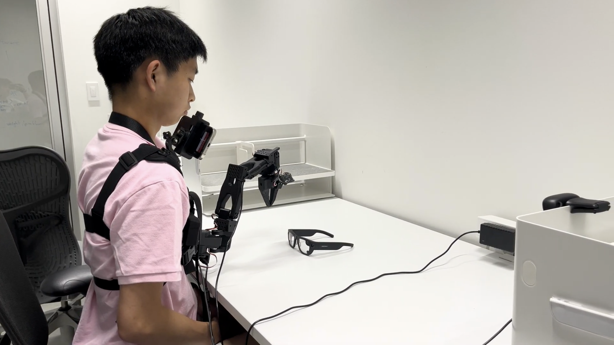
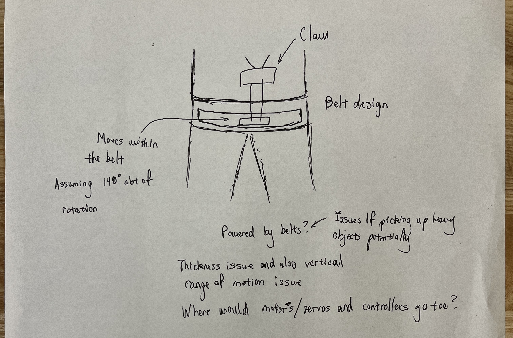
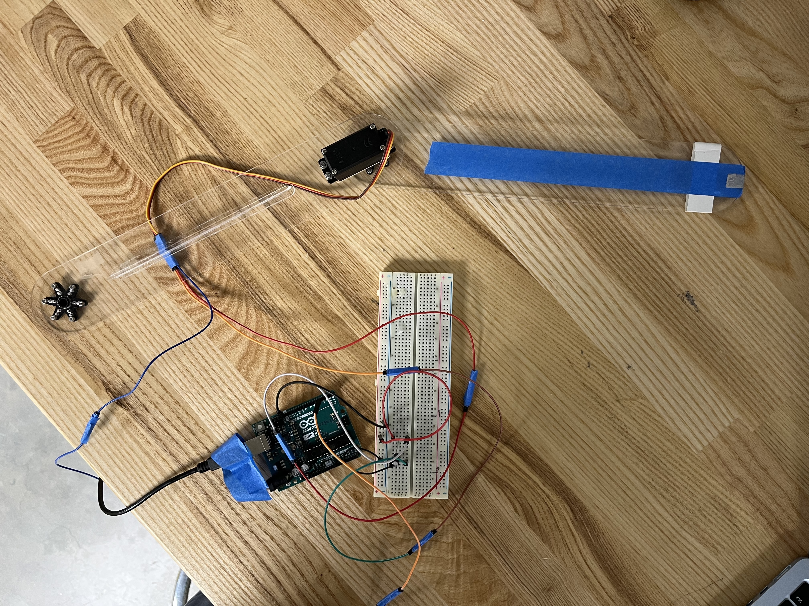
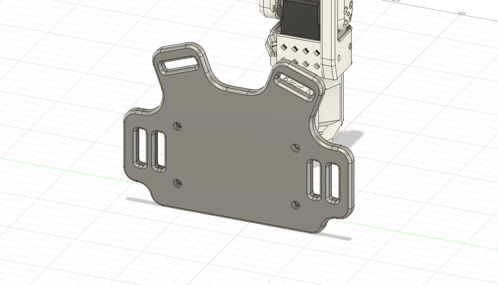
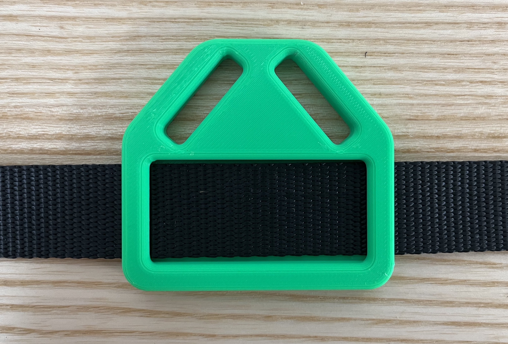
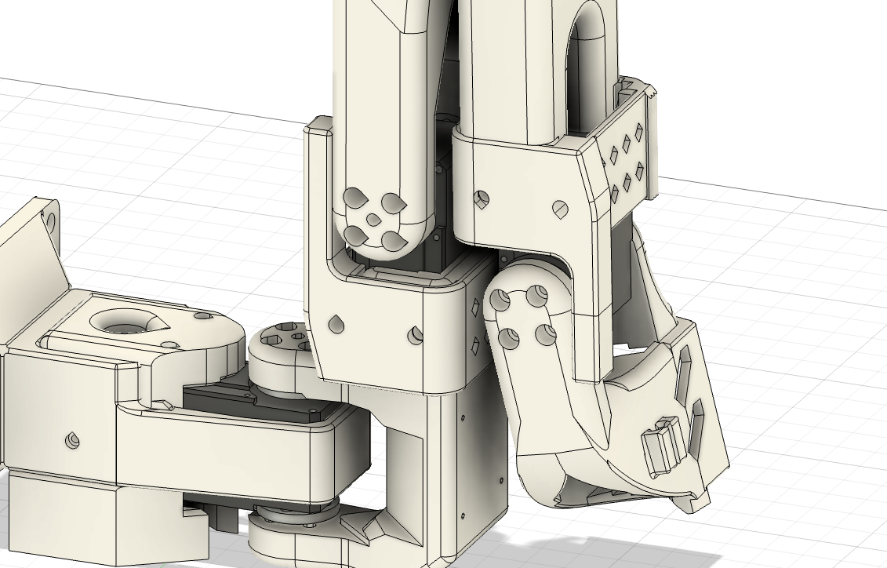
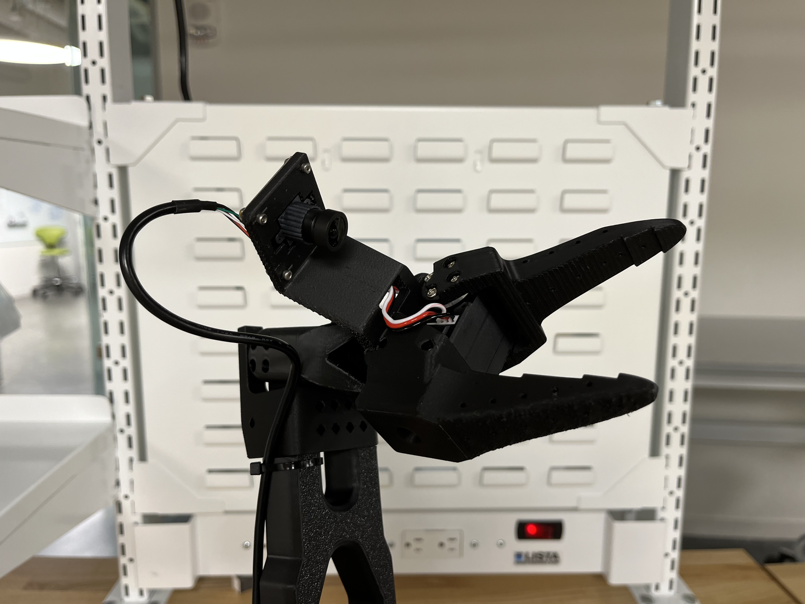

VLA-Controlled Supernumerary Arm
Summary
I adapted an open source 6-DOF arm into a wearable, multi-camera supernumerary arm controlled by a Vision Language Action Model that could accomplish basic pick and place, activities of daily living tasks. In addition to designing custom hardware, I also collected training data, ran fine-tuning experiments on the Harvard FASRC Cluster, and drafted a future evaluation protocol to measure performance.
Context
Supernumerary robotic arms (SRAs) are still mostly bulky and teleoperated, limiting their everyday use cases. To investigate the viability of SRAs for assistive use cases, we prototyped a wearable, low-cost, on-the-body arm paired with a fine-tuned vision language action (VLA) model for near-body object manipulation.
Example instruction
"Pick up the glasses and hand them to me."

My Role
I owned the day-to-day prototyping and system integration for the wearable SRA. Charlie owned the core software + ML infrastructure. We jointly drove project vision, experiment execution, and documentation.
- Constructed a 1-DOF Arduino servo test rig to validate VLA deployability.
- Developed the primary testing setup. Included a multi-camera data collection system and custom-adapted Standard Open-101 (SO-101) Arm.
- Wrote Harvard GPU cluster fine-tuning scripts and managed model training.
- Drafted future evaluation protocol (activities of daily living (ADL) tasks, variations, scoring rubric, and participant survey plan).
Collaborators: Patrick Slade (principal investigator), Charlie Chen (co-intern)


Meta Project Aria Proof of Concept
We initially aimed to use the Meta Project Aria Glasses for data streaming (RGB and SLAM cameras), as they would be an easy way for people to mount sensors. To test compatibility and familiarize ourselves with the smolVLA platform, we started with a 1-DOF MVP system.
- Built: servo actuated, 1-DOF pointer arm powered by smolVLA ingesting Aria camera feeds.
- Tested: quick "point-to-object" trials (glasses) with small demo datasets to check feasibility. Slow performance, but more than passable for MVP.
- Learned: concluded that research direction was possible to explore using custom hardware and smolVLA hardware. Warranted further research.
Moving away from Aria: Early validation enabled us to test with the SO-101 arm. However library compatibility issues between the Aria and SO-101 arose and prevented full system integration. This ultimately forced us to pivot away from the Aria glasses in favor of different camera solutions.
Turning a Tabletop Arm into a Wearable System
The SO-101 is inexpensive and open source, but designed for tabletop use. I redesigned the interface to make it comfortable, stable, and safe for on-the-body wear.
- CADed a mounting plate and designed a chest mounting interface using nylon straps and foam pads to distribute load and prevent slip.
- 3D printed and iterated mounting plates, handles, range of motion (ROM) hard stops for fit, comfort, and safety.
- Verified safe wearability through hardware and software hard stops before testing.



Testing and Different Camera Setups
Now in a testing state, we experimented with different camera vantage points (shoulder iPhone, end effector camera, and environment camera) and combinations to determine the most viable one.
- V1 — Shoulder-only: arm learned repeatable motion, but susceptible to viewpoint drift.
- V2 — Shoulder + wrist: significant pickup accuracy improvement, but still drifted.
- V3 — + environment cam: improved global context, best performance.
Failure Modes & Fixes
| Symptom | Likely cause | What we tried | Outcome |
|---|---|---|---|
| Repeatable motion only | Single viewpoint drift | Added wrist camera | Visibility improved |
| Overshot to the right | Depth ambiguity | Added environment camera | Context improved |
| Inconsistent grasps | Data + calibration limits | More data + longer tuning | Improved but could benefit from more data |

Reflections, Learnings, & Final Report
My summer in the Slade Lab was my first end-to-end, independently driven research sprint: designing a question, building a wearable prototype, collecting data, and iterating on a VLA-controlled manipulation system. Here are my main engineering takeaways:
- Niche open source projects struggle with integration: constant updates to our open source VLA made it very difficult to adapt to our hardware. Picking a specific version of the software and then sticking to it would have greatly helped.
- Sensor placement drives reliability: multiple camera angles hugely impacted our robot's performance. Being intentional with how sensors are deployed determines how data is collected and ultimately dictates performance.
- Quality data leads to quality results: higher quality training data would have significantly improved our robot's performance. More generally, collecting strong telemetry data and device feedback drives quantitative-backed improvements.
Next Steps
Although I did not continue with this line of research, my next steps if I had are as follows.
- Data: Collect larger, multi-view datasets across designed tasks for stronger fine-tuning.
- Trials: Run structured trials with a finalized protocol and test subjects.
- Hardware: Investigate creating a completely custom hardware setup.
I really enjoyed the autonomy presented with this project, but it also showed me how valuable early structure is when time is limited. With clearer milestones up front, Charlie and I could have converged faster towards what eventually became our goal and spent more of the summer on iteration instead of exploration.
End-of-Summer Slides (PDF)
A high-level narrative of my work over the summer that was presented to the lab graduate students. Presented jointly with Charlie.
View slides